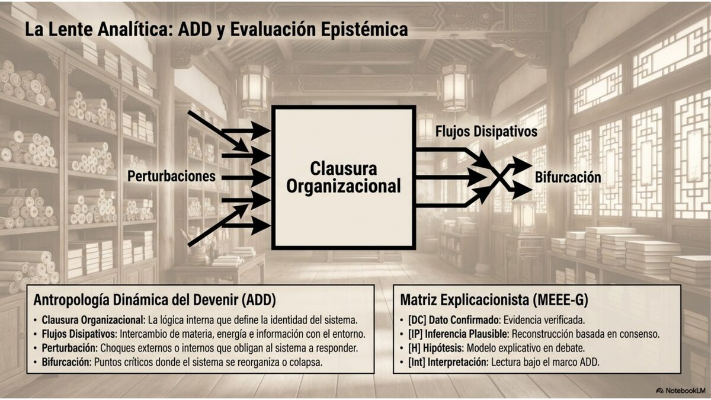
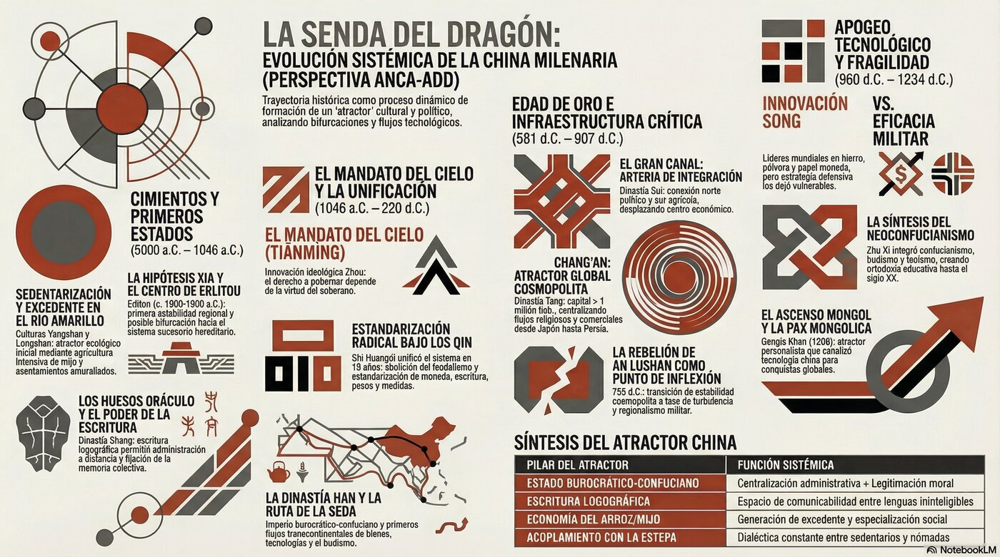

De los primeros agricultores del río Amarillo a la víspera de la tormenta mongola: cómo un sistema civilizatorio construyó, fracturó y reconstruyó su atractor durante tres mil años.
Este análisis combina dos marcos complementarios: la Matriz Explicacionista de Evaluación Epistémica (MEEE-G) para clasificar el estatus de cada afirmación, y la Antropología Dinámica del Devenir (ADD) para interpretar los procesos históricos como sistemas complejos.
Cada afirmación en el texto lleva una etiqueta que indica qué tan sólida es la evidencia que la sostiene. La transparencia epistémica no debilita el análisis: lo hace honesto.
La Antropología Dinámica del Devenir (ADD) trata los fenómenos históricos como sistemas complejos no lineales. Sus categorías analíticas provienen de la termodinámica de sistemas alejados del equilibrio.
| ADD | Antropología Dinámica del Devenir — marco teórico principal |
| MEEE-G | Matriz Explicacionista de Evaluación Epistémica de Goldman — sistema de clasificación epistémica |
| ANCA-ADD | Agente Noticioso Crítico de Actualidad — Análisis Dinámico del Devenir — publicación de origen |
| a.C. / d.C. | Antes de Cristo / Después de Cristo (cronología estándar sinológica) |
| UCR | Universidad de Costa Rica |


Antes de que existiera algo llamado "China", existía el río. El Huang He —el Río Amarillo— arrastraba cada primavera toneladas de loess fértil desde las estepas del noroeste y las depositaba en la llanura central. Era un río caprichoso, propenso a inundaciones catastróficas, pero esa misma inestabilidad obligaba a los grupos humanos que vivían en sus orillas a hacer algo inédito: cooperar a gran escala.
DC La cultura de Yangshao (仰韶文化, c. 5000–3000 a.C.) es la primera gran civilización neolítica documentada en China. Sus aldeas de hasta 200,000 metros cuadrados producían una cerámica pintada reconocible por sus motivos geométricos y animales, cultivaban mijo y criaban cerdos. A Yangshao le siguió Longshan (龙山文化, c. 3000–1900 a.C.), que añadió cerámica negra bruñida, estratificación social evidente en las diferencias funerarias, y —significativamente— las primeras murallas de tierra apisonada: alguien, en algún momento, sintió que valía la pena defender lo que había acumulado.
Pero decir que una "sucedió a la otra" es simplificar demasiado. IP La evidencia arqueológica sugiere más bien un mosaico de culturas regionales —Dawenkou en el este, Hongshan en el noreste— que intercambiaban bienes e ideas antes de que la cuenca del río Amarillo se consolidara como el núcleo dominante. La historia de China no comienza como una línea recta, sino como una red.
La transición neolítica del río Amarillo tiene su eco en el Valle Central costarricense y en Guayabo de Turrialba: el control del excedente agrícola y la gestión del agua como catalizadores de centralización política. La arqueología local muestra cacicazgos complejos surgidos de las mismas tensiones entre cooperación hidráulica y competencia territorial.
Según las crónicas chinas, fue Yu el Grande quien domó las inundaciones y fundó la primera dinastía, la Xia. La tradición le atribuye haber recorrido personalmente cada río y montaña del imperio para diseñar un sistema de canales y diques. Es un relato hermoso. El problema es que ninguna inscripción contemporánea lo confirma.
H El yacimiento de Erlitou (c. 1900–1500 a.C.) en la provincia de Henan muestra una sociedad estratificada con palacios de tierra apisonada, talleres de bronce y tumbas de élite. La mayoría de los arqueólogos chinos lo identifican como la capital de la Xia tardía; fuera de China, esa identificación se considera una hipótesis no demostrada por falta de evidencia epigráfica contemporánea —no hay inscripciones que digan "esto es Xia".
Lo que sí es DC es que en Erlitou existió una entidad política compleja que centralizaba la producción de bronce: armas para la coerción, vasijas rituales para la legitimación. Sea o no la Xia legendaria, este lugar marca la primera estabilidad regional documentada en la llanura central. Y la transición de liderazgo basado en el mérito —la narrativa mítica de Yu— a la sucesión hereditaria marca una bifurcación que definiría toda la historia política china posterior: el poder ya no se gana, se hereda.
El debate Xia-Erlitou ilustra una tensión que también enfrenta Costa Rica en la reconstrucción de sus historias indígenas precolombinas: cómo articular la tradición oral con la evidencia arqueológica sin caer en la mitificación ni en el descarte positivista. La arqueología de Guayabo enfrenta el mismo problema metodológico que Erlitou.
Con los Shang llegamos por fin al terreno de la historia documental. DC En Yinxu, la capital tardía cerca de la actual Anyang, los arqueólogos han desenterrado casi 100,000 fragmentos de huesos de animales y caparazones de tortuga con inscripciones grabadas. Los reyes Shang aplicaban calor a estos objetos, interpretaban las grietas resultantes y registraban preguntas y respuestas: si llueve esta semana, si debemos atacar a los Qiang, si el rey sobrevivirá a su enfermedad. Son los huesos oráculo, la forma más antigua de escritura china madura, y hablan con una voz que tiene más de tres mil años.
La sociedad Shang era fuertemente jerárquica y militarista. Sus reyes eran divinidades en vida, rodeados de una aristocracia guerrera y de una industria del bronce sin paralelo en la época. IP El "mandato divino" como marco de legitimación ideológica está implícito en la forma misma de los huesos oráculo —el rey consulta a los antepasados y al Cielo—, aunque su formulación explícita como "Mandato del Cielo" vendrá solo con los Zhou.
La escritura sobre hueso es un recordatorio de que crear registros permanentes es una tecnología de poder: permite la administración a distancia y la transmisión de mandatos a través del tiempo. Costa Rica, que invierte en digitalización de archivos históricos y alfabetización digital, participa de esa misma lógica con tecnologías radicalmente distintas pero con la misma función: mantener la clausura institucional del Estado a través del tiempo.
Los Zhou derrocaron a los Shang en el siglo XI a.C. y necesitaban justificar el regicidio. Su solución fue brillante: inventaron la doctrina del Mandato del Cielo (天命, Tiānmìng). El derecho a gobernar no es absoluto ni puramente hereditario: depende de la virtud del soberano. Si un rey se vuelve tiránico, el Cielo retira el mandato y se lo otorga a otro linaje más virtuoso. Era la primera formulación de la legitimidad política condicionada al desempeño.
DC El Zhou Occidental (1046–771 a.C.) estableció un sistema feudal (fengjian) en el que el rey otorgaba tierras a parientes y aliados. Funcionó mientras el rey mantuvo el monopolio de la coerción. Dejó de funcionar cuando los nómadas del noroeste invadieron y asesinaron al rey You en 771 a.C., obligando a la corte a huir al este. A partir de ese momento comenzó el largo declive del poder central.
El Zhou Oriental (770–256 a.C.) es, en apariencia, una historia de fragmentación y violencia creciente: 148 estados nominales se reducen a siete grandes potencias que se exterminan entre sí. Pero hay algo paradójico. IP Fue precisamente esa violencia la que generó los grandes florecimientos intelectuales de China. El Período de los Reinos Combatientes (475–221 a.C.) vio nacer el confucianismo, el taoísmo, el legalismo y el mohismo. La presión existencial impulsó innovación en tecnología militar (ballesta, caballería), administrativa (códigos legales escritos, burocracia meritocrática) y filosófica. La guerra fue, paradójicamente, creativa.
La fragmentación Zhou es un espejo invertido de la integración centroamericana: mientras China pasó de la unidad a la fragmentación y luego a la reunificación forzada, el istmo transitó el camino opuesto desde las repúblicas centroamericanas hacia una integración parcial y siempre en tensión. El Mandato del Cielo sigue siendo una pregunta pertinente: ¿en qué se funda hoy la legitimidad de un Estado? ¿En el origen electoral, en la eficacia de sus políticas, o en alguna combinación de ambas?
El estado de Qin era el más periférico de los siete grandes: situado en la frontera noroccidental, considerado semibárbaro por los estados del centro. Pero fue precisamente esa posición marginal la que le permitió adoptar sin remordimientos las doctrinas legalistas más radicales: centralización absoluta, meritocracia burocrática, estandarización de todo. Entre 230 y 221 a.C., el rey Zheng conquistó sistemáticamente los seis reinos restantes y se proclamó Qin Shi Huangdi, el "Primer Augusto Emperador".
DC Lo que siguió fue una revolución administrativa sin precedentes: abolió el feudalismo, dividió el imperio en 36 comandancias gobernadas por funcionarios civiles no hereditarios —nombrados y removidos por el centro—, estandarizó la escritura, las medidas, las monedas y hasta el ancho de los ejes de las carretas para que los caminos fueran compatibles. También inició la construcción de la primera versión de la Gran Muralla. IP Según la tradición confuciana, ordenó la "quema de libros y el enterramiento de eruditos"; la magnitud de esta represión cultural es probablemente amplificada por la hostilidad de los historiadores posteriores hacia el legalismo.
Qin Shi Huangdi murió en 210 a.C. Su hijo no supo gestionar las tensiones acumuladas. En 206 a.C. la dinastía colapsó. Solo había durado quince años. Pero la infraestructura que había creado —el modelo de estado centralizado burocráticamente— sobreviviría dos mil años más.
La estandarización Qin fue la condición de posibilidad para un mercado interno integrado. Costa Rica, con una economía pequeña integrada al comercio global, debe preguntarse qué "estándares" —técnicos, laborales, ambientales, digitales— debe adoptar para insertarse en cadenas de valor globales sin perder autonomía regulatoria. La lección de Qin: la estandarización crea eficiencia pero también crea fragilidad cuando no se articula con mecanismos de participación y legitimación.
Liu Bang era un funcionario de bajo rango que lideró una rebelión campesina, derrotó a sus rivales y fundó la dinastía Han. El grupo étnico mayoritario de China se llama hasta hoy Han: esa sola palabra mide la profundidad de la huella que dejó esta dinastía en la identidad colectiva china.
DC Los Han adoptaron el confucianismo como ideología de estado y establecieron un sistema de exámenes para seleccionar funcionarios. Expandieron las fronteras hacia Corea, Vietnam y la cuenca del Tarim, y abrieron la Ruta de la Seda hacia Asia Central, Persia y, eventualmente, el Imperio Romano. China exportaba seda y papel; importaba vidrio, lana, jade y, crucialmente, el budismo. Por esta misma ruta viajaron también patógenos que sembraron epidemias en ambos extremos del continente. IP El intercambio global tiene siempre dos caras: enriquecedor y devastador al mismo tiempo.
La síntesis Han —centralización administrativa Qin más legitimidad confuciana— resultó extraordinariamente estable. Las tensiones vinieron de otro lado: facciones de eunucos en la corte, revueltas campesinas como la de los Turbantes Amarillos, y la creciente autonomía de los señores militares regionales. En 220 d.C. el último emperador Han abdicó y China se fragmentó en tres reinos.
Costa Rica firmó en 2010 un TLC con China —el primero de Centroamérica. Participa de una red global de intercambios análoga a la Ruta de la Seda, aunque con asimetrías de poder más pronunciadas. La adopción del 5G chino, la influencia del confucianismo en prácticas empresariales, la creciente presencia de inversiones chinas: son los acoplamientos contemporáneos que un nodo periférico debe gestionar con conciencia de su posición sistémica. La lección Han: los intercambios enriquecen, pero también transmiten vulnerabilidades.
Los siglos que siguieron al colapso Han son, desde la narrativa tradicional china, una historia de "desunión y caos". Desde la perspectiva ADD, son algo más interesante: una demostración de que "China" no es un hecho natural sino un proyecto político que debe ser constantemente reconstruido.
Los Tres Reinos (220–280) y las subsiguientes Dynastías Meridionales y Septentrionales (317–589) duraron casi cuatro siglos. DC Durante este tiempo el sur —la región del Yangtsé— emergió como nuevo centro económico gracias al cultivo de arroz inundado, mientras el norte era gobernado por sucesivas dynastías fundadas por pueblos nómadas que adoptaban cada vez más la cultura china. El budismo floreció en ambos lados de la frontera como única religión unificadora.
La dynastía Sui (581–618) reunificó China en menos de una década. Construyó el Gran Canal, conectando el norte con el sur: una obra que reconfiguró los flujos económicos para siempre. Pero agotó al campesinado con corveas masivas y colapsó tras solo dos emperadores —otro caso de infraestructura brillante con costo político insostenible.
La dynastía Tang (618–907) heredó esa infraestructura y la convirtió en el apogeo cosmopolita de la historia china. La capital, Chang'an, con más de un millón de habitantes, tenía barrios persas, sogdianos, coreanos y japoneses. DC Era la ciudad más grande del mundo. La rebelión de An Lushan (755–763) fue el punto de inflexión: el reemplazo del servicio militar campesino por ejércitos profesionales comandados por gobernadores militares autónomos (jiedushi) creó una fragmentación del poder que hacía inevitable el colapso final en 907. Tras el Tang, cinco efímeras dynastías en el norte y diez reinos independientes en el sur —el Período de las Cinco Dynastías y los Diez Reinos (907–960)— antes de que los Song reunificaran.
Costa Rica abolió el ejército en 1949, optando —como los reinos del sur durante este período— por invertir en educación y comercio en lugar de capacidad coercitiva. La lección del Gran Canal Sui: la infraestructura puede catalizar el desarrollo, pero su financiamiento no debe agotar al Estado. La lección Tang: la delegación del poder militar en actores autónomos crea dinámicas de fragmentación muy difíciles de revertir. En términos contemporáneos: la subcontratación de funciones estatales críticas puede generar acoplamientos que eventualmente escapan al control público.
La historia Song es una de las más fascinantes y más perturbadoras de la historia mundial: una civilización que fue simultáneamente la más avanzada de su tiempo y militarmente incapaz de defenderse.
DC Los Song fueron el primer gobierno en emitir papel moneda de uso generalizado, el primero en establecer una armada permanente, los inventores de la imprenta de tipos móviles —dos siglos antes que Gutenberg—, los primeros en aplicar la brújula a la navegación y la pólvora a las armas de fuego. La producción de hierro y acero alcanzó niveles no vistos en Europa hasta la Revolución Industrial. Hangzhou y Quanzhou se convirtieron en los mayores puertos comerciales del mundo. Int China, en el período Song, fue el principal exportador de innovación del planeta.
Y sin embargo. Los Song nunca recuperaron el norte de China, perdido ante los Jin. Pagaban tributo anual a los Liao y luego a los Jin a cambio de una paz precaria. Su estrategia militar fue deliberadamente defensiva: el Estado había invertido en control civil de los militares para evitar los golpes de estado que habían destruido el Tang. IP Esta decisión institucional fue racional a corto plazo —evitó el caudillismo— pero catastrófica a largo plazo: dejó al sistema sin capacidad de resistir cuando apareciera un enemigo verdaderamente formidable.
La analogía Song-Costa Rica es la más directa de toda esta historia: un país sin ejército, con alta inversión en educación y cultura, una economía basada en servicios de alto valor y comercio exterior. El dilema Song —¿cuánta fragilidad defensiva puede sostener un sistema que apuesta todo al capital simbólico?— es también el dilema costarricense en un mundo que se vuelve cada vez más inestable geopolíticamente. La respuesta Song fue el multilateralismo y el pago de tributo; la respuesta costarricense ha sido el Derecho Internacional y la neutralidad. Ambas son estrategias racionales; ambas dependen de que el entorno sistémico las respete.
En 1206, en las orillas del río Onon, una asamblea tribal proclamó a Temüjin Gengis Khan —"Gobernante Universal". Temüjin había unificado a las tribus mongolas mediante una combinación de alianzas matrimoniales, reformas militares radicales y una brutalidad calculada que convertía la rendición en la única opción racional: las ciudades que resistían eran destruidas; las que se rendían, incorporadas. Era terror como política exterior.
DC En 1211, Gengis declaró la guerra a la dynastía Jin, que gobernaba el norte de China. La campaña duró más de dos décadas. Los mongoles combinaban la caballería de arco compuesto —con un alcance y cadencia muy superiores a los arqueros chinos— con la artillería de asedio china que capturaban con sus ingenieros. En 1215 tomaron Zhongdu, la actual Pekín. El último emperador Jin se suicidó en 1234. Este es el punto donde termina esta primera parte: la víspera. Los Song del sur sobrevivían todavía. Por poco tiempo.
La conquista del norte de China fue extraordinariamente destructiva —las estimaciones de mortalidad, aunque debatidas, son de escala catastrófica. IP Pero los mongoles también mostraron una notable capacidad de adaptación: adoptaron la administración china, incorporaron a funcionarios kitanos y chinos, y comenzaron el largo proceso de sinización que culminaría bajo Kublai Khan. Este patrón —el conquistador que termina siendo conquistado culturalmente— se repetiría varias veces más en la historia china.
El ascenso mongol demuestra cómo un nodo periférico —las tribus de la estepa, consideradas "bárbaras" por las civilizaciones asentadas— puede convertirse en un atractor global mediante innovación organizativa y síntesis tecnológica. Costa Rica, como nodo periférico en el sistema global, debe estar atenta a las disrupciones que pueden alterar el equilibrio de poder desde los márgenes: inteligencia artificial, energías renovables, biotecnología. Los nuevos "ejércitos mongoles" no llevan arcos: llevan algoritmos.
Tres mil años de historia china, analizados desde la ADD, revelan un atractor civilizatorio de extraordinaria resiliencia. Sus cinco pilares: